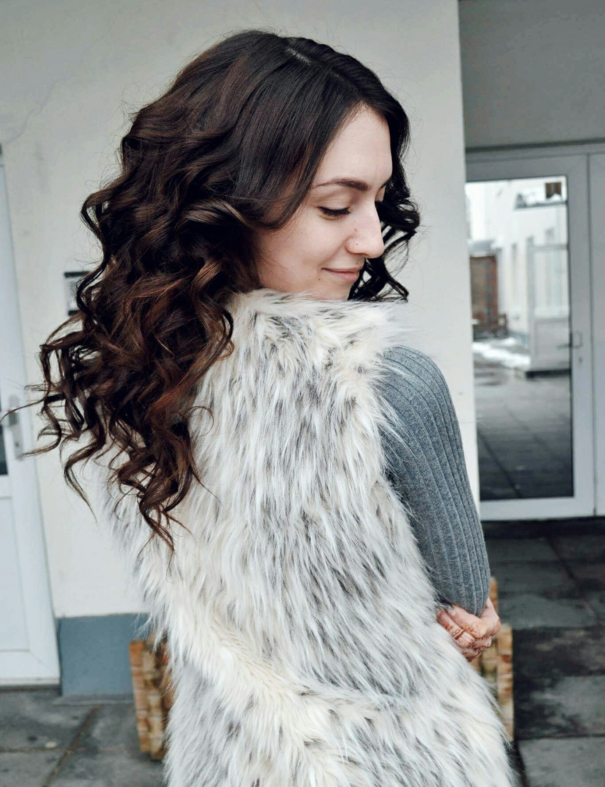

Hi, my name is Julia, I’m a fourth year Bachelor’s degree student from Klaipeda, Lithuania.
This year I participated in “Work&Travel USA” program, and I’ve spent my summer in Myrtle Beach, SC. This is my food photo diary.
The goal is to share my impressions with you! Hope you like it!